Retro Game Challenge

Complete on 2023-06-15
5 / 5
Release Date: Feb 10, 2009
Meta Score: 77
Screenshots
 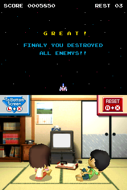
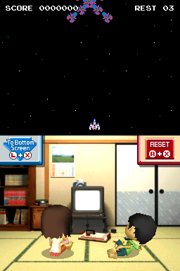
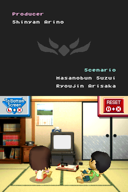
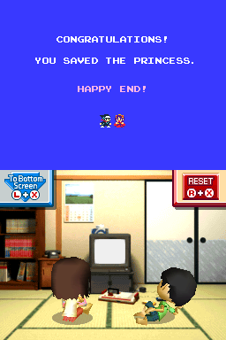
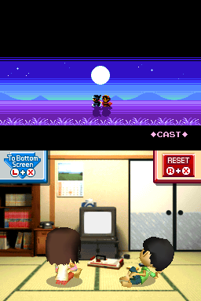
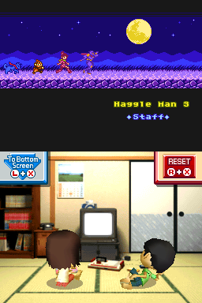
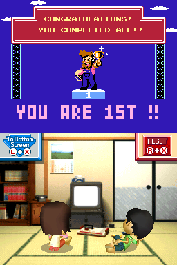
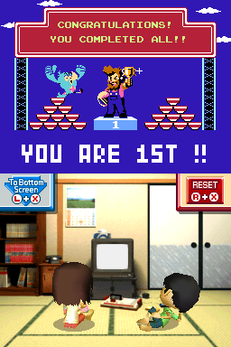
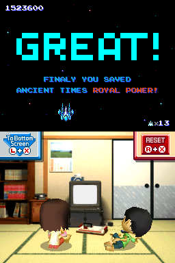
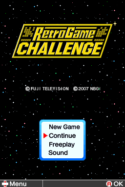
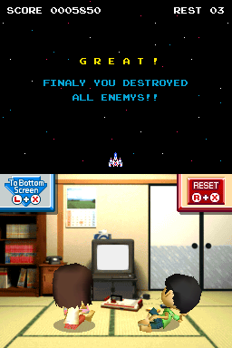
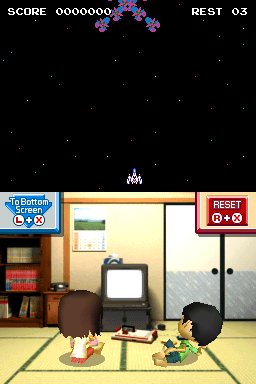
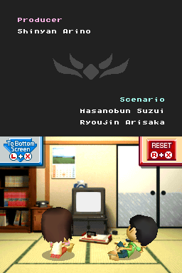
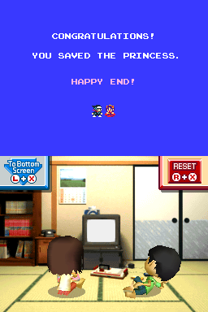
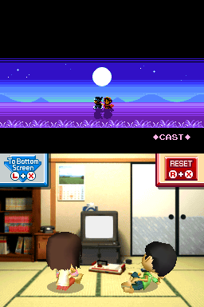
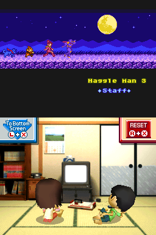
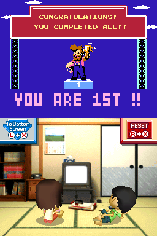
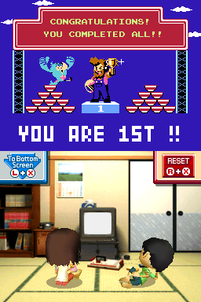
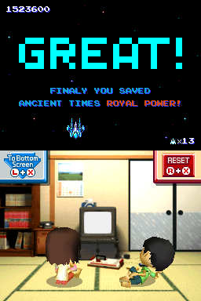
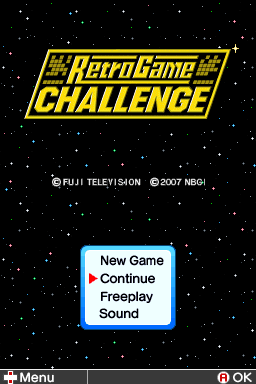
Notes
Retro Game Challenge is a pretty unique game. The premise/frame story is that you have been captured by a demon who has sent you back in time to the 80s to play classic video games. He gives you challenges for a series of faux-NES games (clearly homages to real classic NES games) to escape.
It's really fun. The fake NES games capture what's fun about classic games, and the addition of manuals and magazines with hints, secrets, and cheats is really nice and shows a real attention to detail. The games are a bit lighter and shorter than real classic games, and are designed in generally a bit more forgiving way than classic games.
There are 4 mini challenges give for each game initially which advance the story and unlock new games. Then at the end your final challenge is to beat every game in the collection. This isn't that arduous as each game has some kind of major secrets or cheats to make this doable. For example, Cosmic Gate has a secret to warp straight to the end of the game which is revealed in the final in-game magazine issue. Some of these, like the ability to go straight to the credits in Guadia Quest with a hidden NPC, feel like they were put in the game for me to not get stuck on this game in the challenge.
Now follows mini reviews of the 8 titles in the game:
Cosmic Gate
A Galaga-style space shooter. Pretty basic, but fun enough, and the warp system is kinda interesting.
Robot Ninja Haggle man
2D platformer which seems split between mutliple titles in influence. Kill all the enemies in a looping stage, then beat a "boss", repeat. Not a massive fan of this, it's ok, but I don't find it super fun.
Rally King
Top down driving game. Fairly fun, always find drifting/boosting finnicky although you can pretty much win without using them. Short, only 4 tracks.
Star Prince
Much more sophisticated space shooter with unique stages and bosses. Pretty fun especially with the right powerups.
Rally King SP
Almost identical to Rally King with tweaked stages. A bit of a let down. The story explanation that it's a promo tie-in with instant noodles is funny but the game feels like filler.
Robot Ninja Haggle Man 2
Pretty similar to RNHM1 with larger stages and better graphics. Much the same feelings about it, didn't win me over.
Having to actually beat the game was frustrating. The levels are bigger and have way more enemies than Haggle Man 1, and you still can only ever take 2 hits before dying with no way to heal. This adds up to some very frustrating stages, especially since you again have to go through the whole set of 8 stages twice. I initially missed the level select cheat, which does at least allow you to skip through to the final boss.
Guadia Quest
This is probably the highlight for me. A full Dragon Quest-style JRPG. Has some slightly unique mechanics with the weapon stat system and the recruitable "Guadia" monsters. Because it's a bit smaller than a real game, isn't too long or frustrating to play. Had fun with it.
Robot Ninja Haggle Man 3
A big change for this sequel, it's more of an action platformer with some moderate metroidvania elements. Very fun.